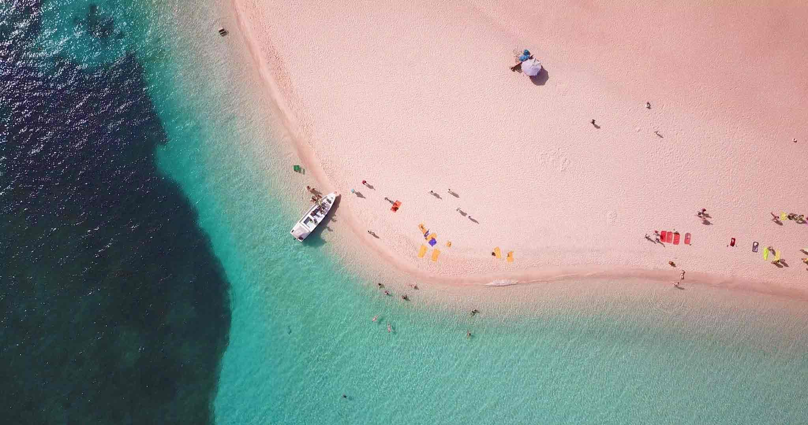
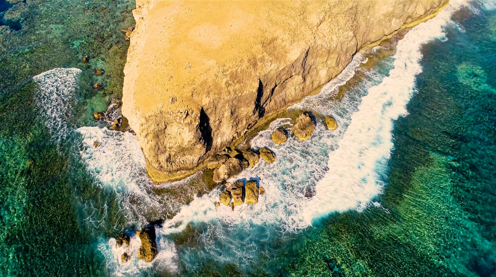
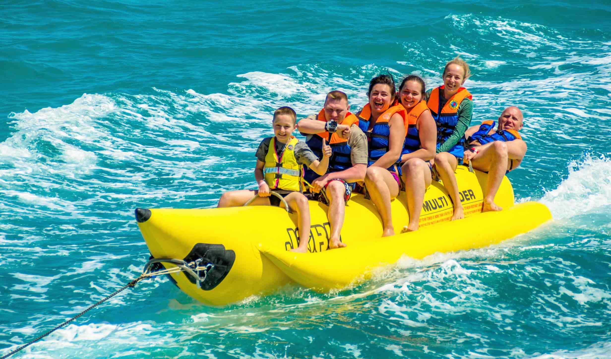
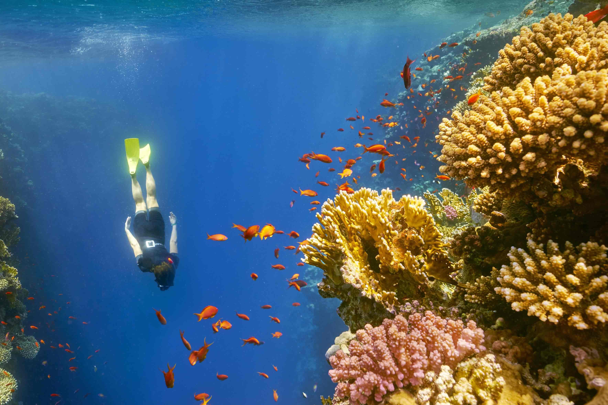
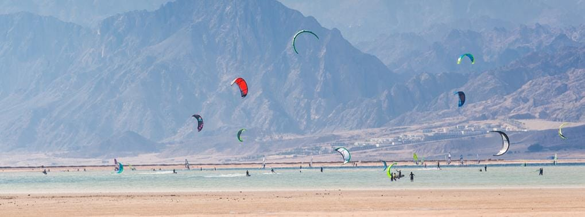
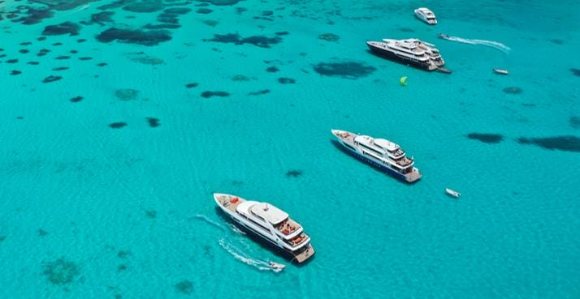

Endless sunshine and warm temperatures throughout the year make Egypt the ideal destination for those beach holidays you crave! Whether you are looking for large all-inclusive resorts, romantic getaways at boutique hotels, secluded campsites, action filled adventures, or a summer beach rental, Egypt has what you are looking for. Come and explore the many escapes on offer with plenty of beach, water sports, nightlife, and relaxation for people of all tastes to enjoy.

There are a few places in the world with beaches that can rival the beauty and diversity of Egypt’s coastlines, offering escapes to visitors all year round. Read More

A Tale of Two Worlds: Underwater Adventure & Seaside Luxury Below the surface, an adventure unfolds among rare corals and breathtaking colors. Above the water, pure relaxation begins. The Red Sea islands offer the perfect blend of Egypt’s natural wonders and premier 5-star hospitality. Dive into adventure, surface to luxury. If you ready to experience the beauty of Egypt Read More

Kids love the water and have a taste for adventure too! Most of the Red Sea’s resorts and towns, from Hurghada to Marsa Alam, offer a variety of options for family fun and kid-friendly water sports. Head out on a banana boat or go tubing, hitting the waves and hanging on until the very end! Explore the deep blue sea and compete to see who can spot the most sea creatures zip by on board a glass bottom boat. Read More

Exploring the Red Sea’s world-famous marine life is one of the most thrilling parts of planning a trip to Egypt. Read More

Strong winds, shallow lagoons, and flat waters offer superb conditions for kiting and windsurfing on the Red Sea coastlines. Read More

The fun isn’t limited to the shore; why not head out onto the open sea? If you’re heading to the Red Sea, consider hitting the deep blue on a group boat rental for a day trip or overnight. Read More